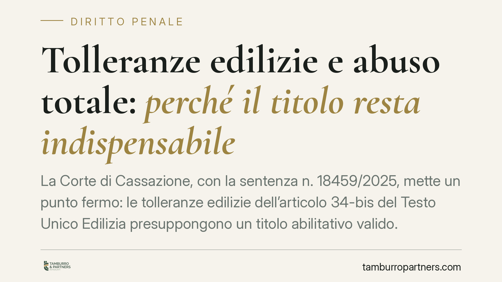

Tolleranze edilizie e abuso totale: perché il titolo resta indispensabile
La Corte di Cassazione, con la sentenza n. 18459/2025, mette un punto fermo: le tolleranze edilizie dell'articolo 34-bis del Testo Unico Edilizia presuppongono un titolo abilitativo valido. Non sono una scorciatoia per legittimare opere costruite su immobili interamente abusivi, che restano penalmente rilevanti. Una lettura che ridimensiona le aspettative aperte dal cosiddetto Decreto Salva Casa.

Il caso e il principio affermato
La vicenda riguarda opere realizzate su un immobile privo di qualsiasi titolo edilizio. La difesa invocava l'articolo 34-bis del D.P.R. 380/2001 — introdotto per gestire le piccole difformità — sostenendo che le irregolarità rientrassero tra le "tolleranze" costruttive ed esecutive e non fossero quindi sanzionabili.
La Cassazione ha respinto l'impostazione. Le tolleranze edilizie operano solo dove esiste un titolo abilitativo valido al quale raffrontare l'opera realizzata. Dove il titolo manca del tutto, non c'è alcun parametro rispetto al quale misurare uno scostamento "tollerabile": l'intero manufatto è abusivo e la condotta conserva rilevanza penale.
Inquadramento normativo
L'articolo 34-bis del Testo Unico Edilizia, modificato dal D.L. 69/2024 (Decreto Salva Casa), distingue due categorie. Le tolleranze costruttive (comma 1) riguardano il mancato rispetto dell'altezza, dei distacchi, della cubatura, della superficie coperta e di ogni altro parametro, entro il limite del 2% delle misure previste nel titolo (percentuale innalzata per gli immobili di minori dimensioni dalla riforma del 2024). Le tolleranze esecutive (comma 2) riguardano invece le irregolarità geometriche, le modifiche alle finiture di minima entità e la diversa collocazione di impianti e opere interne, realizzate durante i lavori.
Il dato testuale è decisivo. La norma parla di scostamenti rispetto a "quanto previsto nel titolo abilitativo". Il titolo non è un dettaglio: è il presupposto logico e giuridico dell'istituto. Senza di esso, la categoria stessa della tolleranza non ha oggetto.
La Cassazione colloca così l'articolo 34-bis nel suo perimetro corretto: non è una forma di sanatoria mascherata, ma uno strumento per neutralizzare le micro-difformità fisiologiche di un cantiere regolarmente autorizzato.
Implicazioni pratiche
La pronuncia chiude un equivoco diffuso dopo l'entrata in vigore del Decreto Salva Casa. Molti proprietari hanno interpretato la riforma come un'apertura generalizzata alla regolarizzazione dell'esistente. Non è così.
Per chi detiene un immobile totalmente abusivo — costruito cioè senza alcun permesso di costruire o titolo equivalente — l'articolo 34-bis non offre alcuna via d'uscita. La strada resta quella ordinaria: accertamento di conformità (art. 36 TUE) o le procedure di sanatoria eventualmente applicabili, con tutti i loro requisiti sostanziali.
Diverso è il caso di chi possiede un titolo valido e teme che alcune difformità minori, emerse magari in sede di compravendita, possano invalidarlo. Qui le tolleranze svolgono la loro funzione: assorbono gli scostamenti contenuti entro le soglie di legge, senza bisogno di nuovi provvedimenti.
Per i tecnici abilitati il monito è esplicito. Attestare la "tollerabilità" di difformità su un bene privo di titolo espone a responsabilità, anche penale, per falsità nelle dichiarazioni. La verifica preliminare dell'esistenza e della validità del titolo diventa passaggio obbligato prima di ogni attestazione.
Cosa fare in concreto
- Verificate l'esistenza del titolo prima di invocare qualsiasi tolleranza: recuperate permesso di costruire, SCIA o condono e confrontateli con lo stato dei luoghi.
- Distinguete la difformità dall'abuso totale: una cosa è lo scostamento rispetto a un progetto approvato, un'altra è l'assenza assoluta di legittimazione.
- Richiedete una relazione tecnica asseverata a un professionista che misuri gli scostamenti rispetto alle soglie dell'art. 34-bis, senza forzature interpretative.
- Non affidatevi alla sola riforma del 2024: il Decreto Salva Casa ha ampliato alcune maglie, ma non ha trasformato le tolleranze in uno strumento di sanatoria.
- In caso di contestazione penale, consigliamo di non attendere: la qualificazione giuridica dell'intervento incide direttamente sulla strategia difensiva e sui termini per eventuali regolarizzazioni.
La sentenza n. 18459/2025 ribadisce un principio di buon senso giuridico: gli istituti di semplificazione servono a gestire l'irregolarità di ciò che è lecito nella sua struttura, non a rendere lecito ciò che non lo è mai stato.
---
*Contributo informativo a cura di Tamburro & Partners - Avv. Giuseppe Tamburro. Non costituisce parere legale.*
Ogni condominio ha una storia a sé.
Se gestisci un'amministrazione e vuoi un confronto su una specifica questione condominiale, scrivi allo studio. Ti rispondiamo entro un giorno lavorativo.